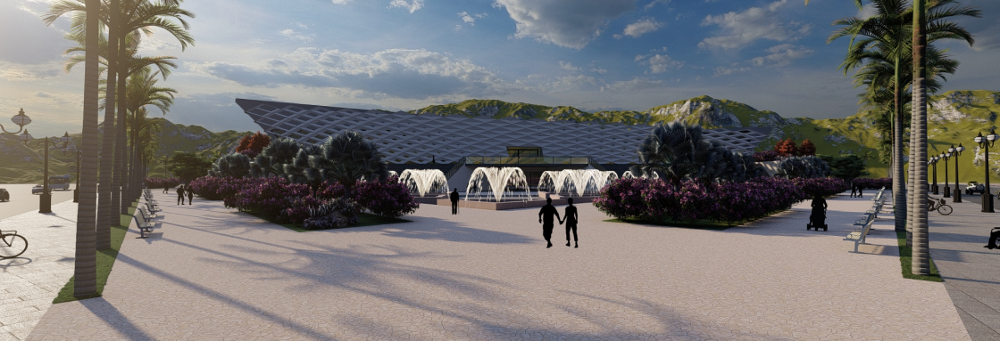

A museum designed to showcase the struggles the Moroccan people had to
endure during colonisation period.

Embark on a visual journey through the heart of Casablanca, Morocco, where
my team and I crafted a Museum of Independence War. Collaborating during
my final architecture internship, we chose a strategic site next to the
iconic "HASSAN II MOSQUE." Casablanca, the economic port of
Morocco, symbolizes the struggles of colonization, making it the perfect
backdrop.
Our museum is a tribute to the resilient spirit of a people fighting for
freedom. Morocco's rich Islamic, Arabic, and Amazigh heritage served
as our design inspiration. Join us in resurrecting history through a
captivating fusion of architecture and culture, breathing life into the
narrative of a nation's struggle for independence.
The different spaces of the museum can be grouped in three functions:
the exhibition, the public space and staff space. The public spaces are
composed of offices, technical research area and storage. The museum has
two main entrances which are the public entrance for the visitors and the
staff entrance for the workers. So, the workers and the visitor’s have a
different circulation to keep the public and private area separated.
The site features carefully installed lights to ensure optimal
illumination day and night. Three main colors—red, green, and
white—representing elements of the Moroccan flag were strategically
placed. Red symbolizes sacrifice, green signifies unity, and white
represents peace. The design pays homage to Moroccan architecture with an
atrium inspired by the Andalusian style. The skylight provides ample
daylight, while the parametric exterior wall controls it. The use of
traditional materials, including Moroccan tiles, zellige, and marble
stone, further emphasizes the blend of old and modern architectural
styles.
In an attempt to link the old with the new/ the history with the future,
we
tried to make the shape of the building as a modern form whilst keeping
the history within its interior, a history represented by the atrium in
the middle insinuating the famous Moroccan Riyad forms.
The design consists of three floors each related to a specific period.
the first floor we designed was darker than the other two floors with no
daylight only from the skylight in the centre, symbolizing the dark years
Morocco used to live, Pre-colonial time in which the country was divided
into tribes hating each other.
As you climb the exterior stairs to the second floor you feel the progress
and development Morocco tried to make in the colonial period Colonized by
three countries at the same time, Morocco suffered for years until
independence.
A history we tried to insinuate through the maximizing of daylight
entering the building and the use of parametric walls in the exhibition
best showcasing the future awaiting ahead.